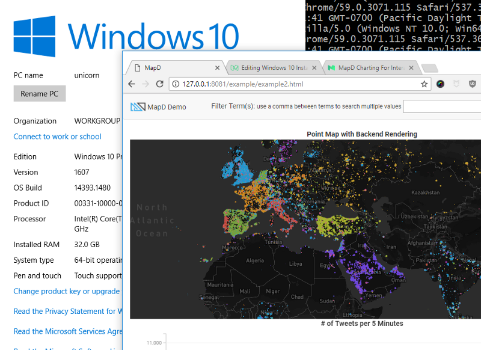

Installing MapD Charting
Mac OS X

Overview
Easiest install out of Mac, Linux, Windows. No problems with minimal installation required.
npm install #downloads all dependencies and devDependencies
npm install mapbox-gl@https://github.com/mapd/mapbox-gl-js/tarball/9c04de6949fe498c8c79f5c0627dfd6d6321f307 #downloads mapbox peer dependency
npm run start
Community tested configurations
- node v6.11
- Mac OS X 10.12.5
- Xcode from Apple App Store
Linux

Overview
Easy install if you use node 5.12.0. Set your node version with nvm or n.
Community tested configurations
- node 5.12.0
- Ubuntu 17.04
Windows 10

Overview
You'll need to install some additional programs and libraries. Works great after you install these components:
- bash to run script npm run start (which you probably have installed with git bash)
- Windows SDK 8.1 (you need this version, not Windows 10 SDK)
- You may also need to install Visual Studio for the build tools
- Node 7.x or below (not node 8, which is the most recent version)
- Python 2.7x 64 bit
In addition to the components above, you should also install the following manually from the command line:
- install node-gyp globally (You'll see it in the warnings.
npm install -g node-gyp) - install node-sass manually (
npm install node-sass)
Tips
As the PATH on git bash and the DOS command prompt are different. You may need to run
some of the scripts from either DOS or Powershell. You need to run npm run start from bash.